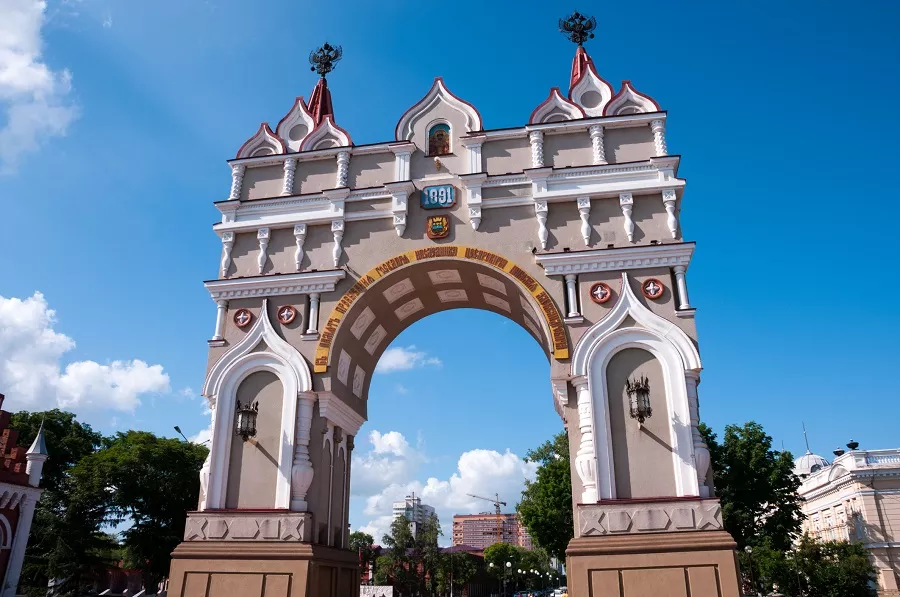
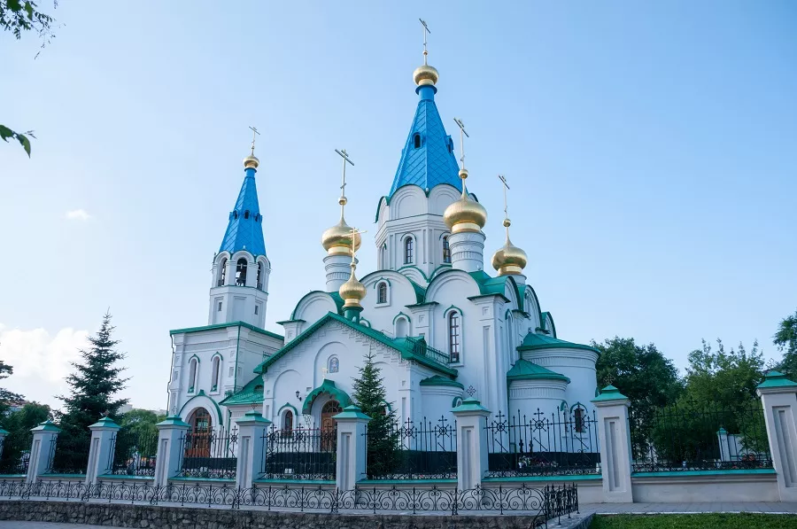
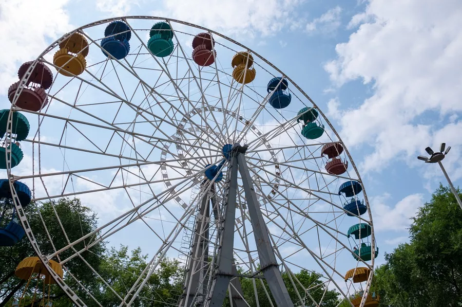
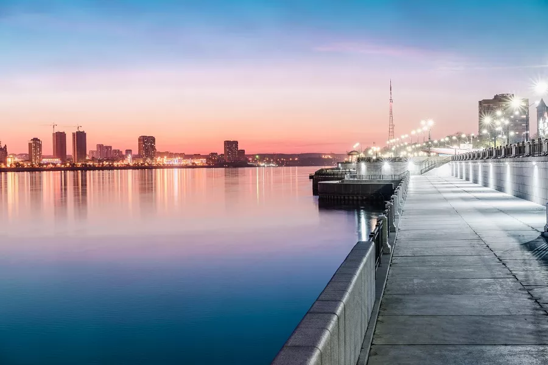

Благовещенск

Триумфальная арка, Благовещенск
Благовещенск – город на берегу могучего Амура, основанный в середине XIX века и сохранивший значительную часть исторической застройки. Особенный интерес у современных туристов вызывает наличие у него «города-близнеца» с китайской стороны: на противоположном берегу находится Хэйхэ. Добавляет плюсов локации и космодром Восточный, в который отправляются экскурсии из Благовещенска.
Зачем люди едут в Благовещенск?
Часть путешественников интересует история и архитектура одного из форпостов императорской России на Дальнем Востоке, привлекает возможность увидеть пограничный Амур и прокатиться по его волнам. Немало и тех, кто приезжает в Благовещенск ради экскурсии на космодром Восточный. Но, наверное, большинство туристов притягивает в эту локацию возможность оказаться в Китае и заняться шопингом: на территории городского округа Хэйхэ действует безвизовый режим для россиян, а в 2022 году к традиционной речной переправе добавился трансграничный мост.
Основное про поездку
- — Пребывание в Благовещенске потребует от 1500 до 5000 рублей вдень в зависимости от того, на какой уровень комфорта вы рассчитываете. Недорогие хостелы предлагают ночлег за 700–800 рублей, в двух-трёхзвёздочных гостиницах 2-3 звезды бюджетный номер стоит 2000–3000 руб (все цены указаны на ноябрь 2022 года). Обед в кафе или фастфуде обойдётся в 500 – 800 руб., средний чек в ресторане – 2 000 руб. Обзорные экскурсии и короткие прогулки по Амуру стоят 300 – 500 руб., однодневные экскурсионные поездки за пределы города 1500–3000 руб., короткие туры в Хэйхэ от 3000–4000 руб.
- — Благовещенск находится в часовом поясе UTC +9 (GMT +9), то есть разница во времени с Москвой значительна – шесть часов. В столице полдень, а в Благовещенске уже вечер.
- — Городской рельеф преимущественно равнинный, с небольшими возвышенностями на окраинах. Перемещаться по Благовещенску очень удобно благодаря чёткой планировке: он сразу застраивался, как римский военный лагерь, – с прямыми улицами, расположенными строго параллельно или перпендикулярно.
- — Благовещенск располагается в природной зоне, где в резко континентальный климат добавляются муссонные черты. Главные климатические особенности – резкий температурный контраст между сезонами (зима очень морозная, лето тёплое и даже жаркое) и сильные температурные перепады в течение суток (разница между температурой ночью и днём может достигать 20 ◦ C). Летом погода переменчивая, нередки сильные дожди и настоящие ливни: бывает, что улицы после непогоды просто затопляет.
Когда ехать
В мае в Благовещенске уже достаточно тепло для того, чтобы отправиться туда для экскурсионного отдыха (днём +19 ◦ C), а в июне начинается пляжный сезон и продолжается до конца августа – начала сентября. Летом в городе средняя дневная температура составляет +26 ◦ C, но из-за муссонности чуть ли не половина дней дождливая, с риском сильных ливней – так что зонт в сумке для туриста просто обязателен. Впрочем, дожди туристов не сильно смущают, и высокий сезон в Благовещенске приходится на летние месяцы.
А вот с приходом осени, когда в других регионах начинает дождить, в Благовещенске устанавливается сухая погода. При этом в сентябре ещё довольно тепло – как в мае. Но холода наступают быстро, уже в октябре бывают минусовые температуры.
Зимой туристов в Благовещенске немного: морозы сильные, средняя температура в январе -21◦ C, причём нередко столбик термометра опускается гораздо ниже.
Достопримечательности
В Благовещенске – обширный исторический центр с хорошо сохранившейся застройкой второй половины XIX и начала XX веков. Прогуливаясь по городу, можно представить, как он выглядел в первые полстолетия после основания. Например, вы увидите колоритную пожарную каланчу и Триумфальную арку, которая украсила город в честь визита цесаревича Николая (будущего императора Николая II), состоявшегося в 1891 году.
К архитектурным достопримечательностям относятся также Церковь иконы Божией Матери «Всех скорбящих Радость», построенная в 1904 году, Гавриило-архангельский мужской монастырь и Кафедральный собор Благовещения Пресвятой Богородицы (новодел, но построенный по плану храма, сгоревшего в 1924 году).
Уюта городу добавляют душевные современные памятники, около которых любят фотографироваться туристы – например, памятник верному Дружку, который с парапета смотрит на Амур, и статуэтка невозмутимого кота, который сидит на лавочке и совершенно не реагирует на лай бронзового пёсика. Эти скульптуры установлены на набережной. Там же стоит памятник пограничнику с овчаркой и стильный механический бык, собранный из шестерёнок и других деталей. А из артефактов минувших дней – бронекатер, помнящий сражения Великой Отечественной войны.
На центральной улице Ленина «продаёт мороженое» скульптура, посвящённая Зинаиде Синициной – местной жительнице, двадцать лет торговавшей любимым лакомством детворы на одном и том же месте. Ещё один колоритный памятник, отразивший судьбы горожан в эпоху 90-х, находится на улице 50 лет Октября – это статуя челнока с тяжёлыми сумками, которые он тащит из Китая.
Популярные городские локации – парк Дружбы, оформленный в китайском стиле, кондитерская фабрика, куда можно отправиться на экскурсию, и настоящее «кладбище динозавров», найденное в 1948 году местным школьником.
Обратите внимание, что Благовещенска отправляются экскурсии к природным достопримечательностям: Михайловским столбам, озеру лотосов, Зейскому водохранилищу. Кроме того, вы можете съездить на гигантскую Бурейскую ГЭС – одну из самых больших в России, а также посетить космодром Восточный.

Кафедральный собор Благовещения Пресвятой Богородицы,
Благовещенск
Развлечения
В Благовещенске стоит выделить время не только на знакомство с историей и архитектурой, но и на прогулки по Амуру на катерах и теплоходах. Также летом можно загорать на пляжах и купаться в Амуре, а зимой – кататься на горных лыжах и сноуборде на турбазе «Снежинка», расположенной в окрестностях города.
Отдохнуть также можно в городском парке культуры и отдыха с 29-метровым колесом обозрения и аквапарке «Атик-Плаза плюс». Для детей найдётся несколько развлекательных центров, для взрослых – с полтора десятка ночных заведений. Действуют филармония, Амурский театр драмы и театр пародий.
Кроме того, можно отправиться за развлечениями и к соседям – у них тоже есть колесо обозрения, причём 82-метровое.

Колесо обозрения, Благовещенск
Кухня
В Благовещенске царит паназиатская кухня, кафе и рестораны предлагают широкий спектр адаптированных китайских и корейских блюд. В местной кулинарии активно используются рис и лапша, древесные грибы, тофу, а на десерт заведения часто предлагают карамелизированные фрукты. Популярные закуски – салат «Хэйхэ» и чисанчи из баклажанов. Даже фастфуд в городе своеобразный: пирожки пянсе, которые готовятся на пару, и хот-доги с добавлением острой моркови.
Из традиционных дальневосточных блюд стоит посоветовать пельмени и приготовленную различными способами камбалу. В местную кухню периодически добавляются и новые блюда, претендующие на звание специалитетов, – например, щукбургер с котлетой из щуки.
Стоит попробовать и блюда с ингредиентами, которые трудно найти в других регионах: например, стейки из кабана, йогурт из оленьего молока, а также десерты с местными дарами природы – амурским мёдом, ягодами, кедровыми орехами.
И, наконец, совершенно особый вид благовещенского фастфуда, продающийся в вендинговых автоматах, – «космическая еда» в тюбиках. Такую раньше брали с собой на орбиту космонавты.
Транспорт
Перемещаться по городу можно на автобусах и такси – троллейбусы с 2016 года в Благовещенске не ходят. Чтобы добраться в соседние города и посёлки, отправляйтесь на автовокзал. Желающие могут арендовать автомобиль, причём с возможностью ездить по всему Дальнему Востоку. Есть в Благовещенске и прокат велосипедов.
Дорога до Хэйхэ занимает около 20 минут – по мосту или по воде. Ходят автобусы и теплоходы, организуются и групповые туры.
Маршрут на 1 день
Пешеходная экскурсия по улице Ленина с осмотром архитектурных памятников. Затем – поворот на набережную, фотосессия рядом с памятниками и на фоне Амура. Прогулка по воде. Во второй половине дня – посещение Краеведческого музея или музея палеонтологии.

Набережная в Благовещенске
Маршрут на 3 дня
День первый. Знакомство с городом, утренняя экскурсия набережной с поворотом на улицу Ленина. Осмотр исторического центра и посещение Краеведческого музея. Затем – прогулка по парку Дружбы или экскурсия на кондитерскую фабрику. В завершении дня – вечернее катание по Амуру.
День второй. Поездка в Хэйхэ или на космодром «Восточный».
День третий. Посещение палеонтологического музея и «кладбища динозавров». Отдых в центральном парке и обзор городской панорамы с колеса обозрения.
10 вещей, которые надо сделать в Благовещенске
- — Прокатиться по Амуру.
- —Сфотографироваться у памятника пограничнику с верным псом и потереть на счастье собачий нос.
- —Выяснить, чем амурозавр отличается от других динозавров.
- —Попробовать космическую еду из тюбика.
- —Найти памятник челноку и положить ему в барсетку монетку – на удачу и для привлечения богатства.
- —Пройти всю набережную – все восемь километров. Ну или сколько получится.
- —Съездить на озеро лотосов и получить эстетический катарсис.
- —Посмотреть на панораму Хэйхе (а то и вовсе сгонять к соседям).
- —Запечатлеть себя рядом со стимпанковским быком.
- —Осуществить мечту детства – отправиться на экскурсию на кондитерскую фабрику.